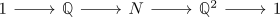
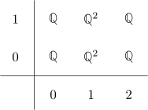
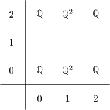

connected nilpotent, rational space of finite rational type in general not rationally homology equivalent to a simple space
Proposition
Let $X$ be a an anima which is connected, nilpotent anima of finite rational homology type.
Then in general there does not exist a map $X \rightarrow \tilde{X}$ or $\tilde{X} \rightarrow X$ which is an isomorphism on rational homology.
Proof
consider the central extension of groups

which by the correspondence between central extension and 2 group cohomology is given by a generator $H^2(B \mathbb{Q}, \mathbb{Q}) \cong H^2(B \mathbb{Z}^2, \mathbb{Q}) \cong H^2(T^2, \mathbb{Q}) \cong \mathbb{Q} \otimes_{\mathbb{Q}} \mathbb{Q} \cong \mathbb{Q}$
This short exact sequence becomes a fiber sequence $B \mathbb{Q} \rightarrow BN \rightarrow B \mathbb{Q}^2$ once the classifying space functor is applied (cf. classifying space functor sends short exact sequences to fiber sequences)
Now consider the cohomological serre spectral sequence with $\mathbb{Q}$ coefficients to get

where it remains to understand the differntial (cf. rational cohomology of the rational eilenberg maclane space + some kunnethhomo ) .
This differential is an isomorphism (I think this follows from correspondence between central extension and 2 group cohomology where we take)
so for degreereasons the spectral sequence collapses in the third page. Therefore we get
So now assume that that there exists some isomorphism to a rational, connected simple anima $X$. Then R-local hurewicz shows that $\pi_1(X) \cong \pi_1(X)^{\mathrm{ab}} \cong H_1(X,\mathbb{Q}) \cong H_1(BN, \mathbb{Q}) \cong \mathbb{Q}^2$ Then consider the fiber sequence
where the map is provided either by $X \rightarrow BN \rightarrow B \mathbb{Q}^2$ or by the universal property of the R-localization.
Then in particular $\tau_{\leq 2} X$ is 2-connected, so $H^1(\tau_{\leq 2} X, \mathbb{Q}) = 0$. Now consider the cohomological serre spectral sequence

where for formal reasons $H^2(\tau_{\leq 2} X, \mathbb{Q}) = \mathbb{Q}$, so the second row fills as above. But then $H^